Kimi K3: Open Frontier Intelligence
title: "Kimi K3: Open Frontier Intelligence" source: https://www.kimi.com/blog/kimi-k3 author: unknown date: unknown models: [kimi-k3] tags: [official, announcement] mirrored: 2026-10-22 note: mirrored against link rot by the Pantheon; all rights with the original author
Kimi K3: Open Frontier Intelligence
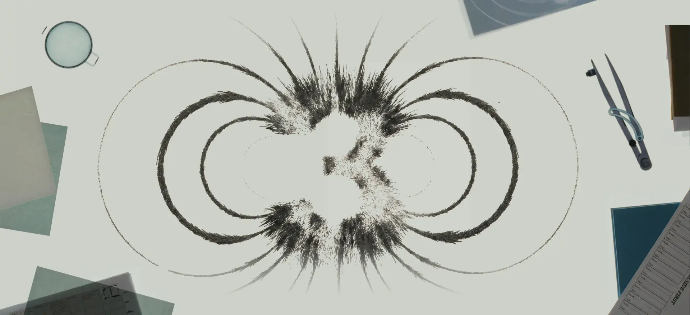
Today, we are introducing Kimi K3 — our most capable model. Kimi K3 is a 2.8T-parameter model built on our Kimi Delta Attention and Attention Residuals, with native vision capabilities and a 1-million-token context window. It is the world's first open 3T-class model, designed for frontier intelligence across long-horizon coding, knowledge work, and reasoning.
While its overall performance still trails the most powerful proprietary models, Claude Fable 5 and GPT 5.6 Sol, Kimi K3 demonstrated frontier-level performance across our evaluation suite, consistently outperforming other tested models.
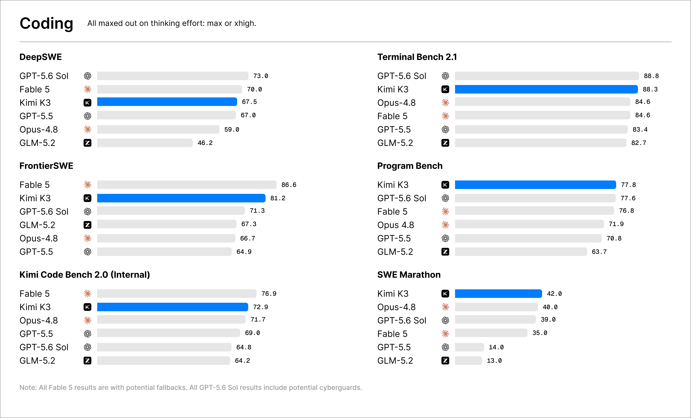
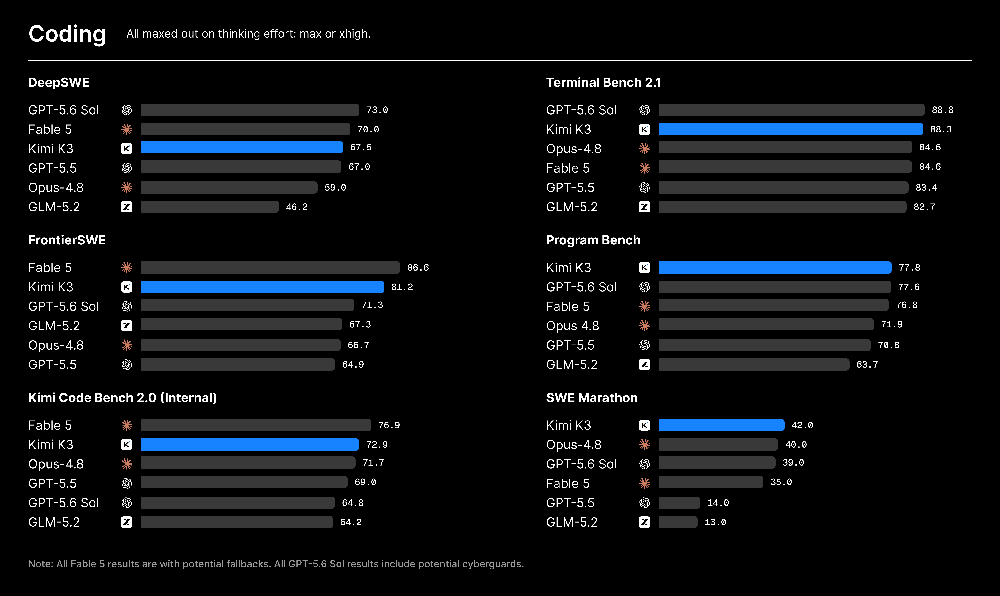
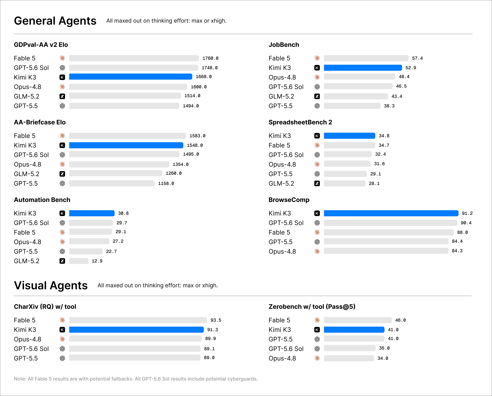
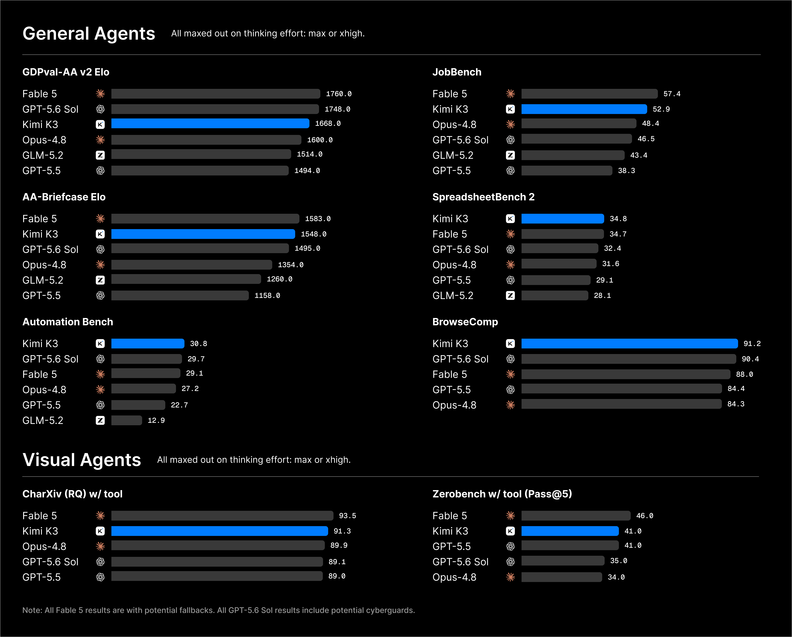
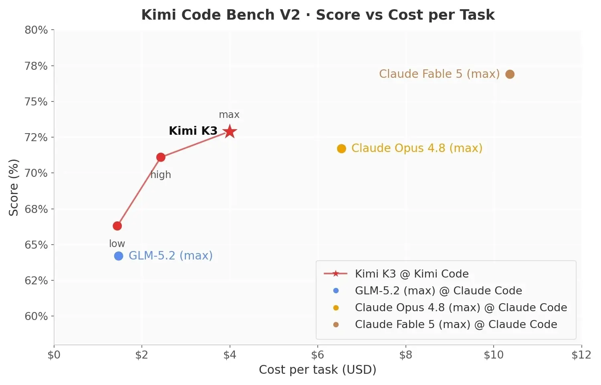
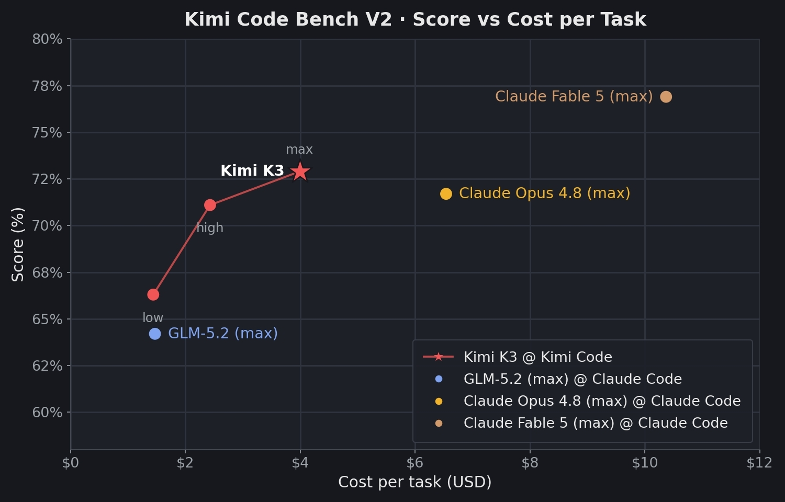
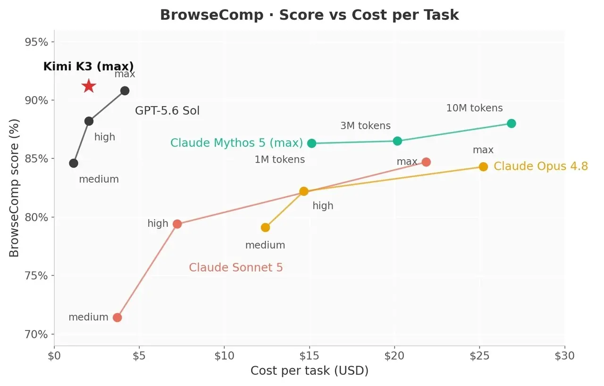
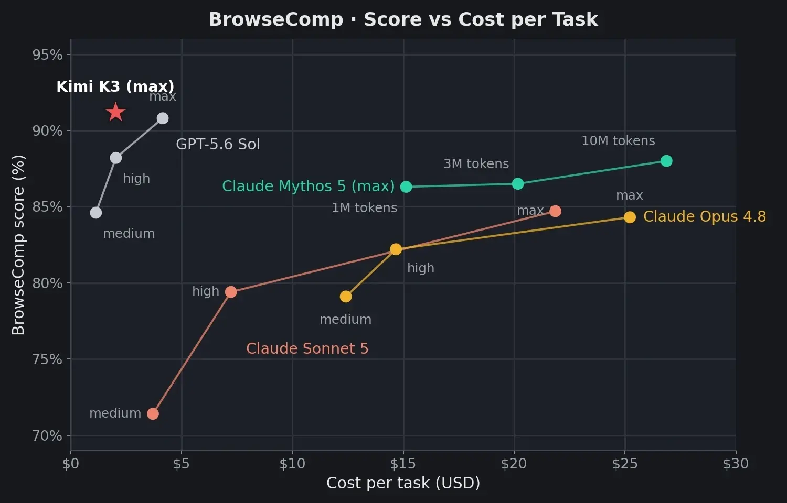
Kimi K3 is available today on Kimi.com, Kimi Work, Kimi Code, and the Kimi API. At launch, Kimi K3 will use max thinking effort by default, with low- and high-effort modes to be introduced in subsequent updates. We are currently working closely with inference partners and open-source maintainers to align technical details and ensure a reliable rollout across the ecosystem. The full model weights will be released by July 27, 2026. Further details on the architecture, training, and evaluations will be released alongside the Kimi K3 technical report.
An Open 3T-Class Model
Kimi K3 is the first open model to reach 2.8 trillion parameters. It marks the latest step in Kimi's sustained push at the scaling frontier: for nine of the past twelve months, Kimi models have set the upper bound of open-model sizes.
Kimi K3 is built on Kimi Delta Attention (KDA) and Attention Residuals (AttnRes), two architectural updates designed to improve how information flows across sequence length and model depth. We have also scaled up Mixture of Experts (MoE) sparsity, effectively activating 16 out of 896 experts when paired with a Stable LatentMoE framework. Together with refined training and data recipes, these structural changes yield an approximate 2.5× improvement in overall scaling efficiency compared to Kimi K2, allowing the model to convert compute into intelligence more effectively.
Coding
Kimi K3 has strong long-horizon coding performance. Operating with minimal human oversight, it can sustain long engineering sessions, navigate massive repositories, and orchestrate terminal tools.
Kimi K3 also excels in tasks blending software engineering with visual reasoning — it leverages screenshots and visuals to optimize game dev, frontend, and CAD.
The case studies below show how Kimi K3's coding capability translates into open-ended software creation and scientific research.
Kernel Optimization
We tested the models' capability to optimize GPU kernels. Each model works independently in an identical sandbox, with up to 24 hours to profile, rewrite, and benchmark four tasks spanning AttnRes, KDA, and a 512-head-dimension MLA kernel across NVIDIA Hopper GPUs and GPGPU from an alternative vendor. Kimi K3 performed competitively with Fable 5 (with fallback) and substantially outperformed Opus 4.8, GPT 5.6 Sol, and GPT 5.5.
Claude Fable 5 was evaluated by a third party, and its results may include fallback behavior. Across most models, some trajectories include small, acceptable precision shortcuts that remain within our numerical tolerance. GPGPU denotes general-purpose GPUs used for computation beyond graphics rendering.
In the late stages of Kimi K3 development, an early version of Kimi K3 handled the majority of the team's kernel optimization works.
GPU Compiler Development
We further tested whether Kimi K3 could build a GPU programming system from scratch. Kimi K3 developed MiniTriton, a compact Triton-like compiler with its own tile-level IR layer over MLIR, optimization passes, and a PTX code-generation pipeline. Across supported roofline benchmarks, MiniTriton delivers performance on par with or better than Triton and torch.compile — beating Triton on certain workloads. Beyond microbenchmarks, MiniTriton sustains end-to-end nanoGPT training with stable convergence, the loss curve closely tracking the reference with only minor divergence — validating the full pipeline on a realistic workload. These results demonstrate that Kimi K3 can build a coherent end-to-end compiler — from DSL frontend and IR passes to PTX codegen and runtime — rather than isolated kernels; its from-scratch Tensor Core path already rivals Triton’s extensively optimized stack.


Game Dev and Digital Creation
Kimi K3 combines strong 3D reasoning, coding, and vision capabilities to turn concepts, images, and videos into fully playable interactive experiences. Kimi K3 achieves true "vision in the loop" by seamlessly iterating between code and live screenshots—instantly seeing and refining outputs.
Chip Design
As an early proof of concept, Kimi K3 designed a chip to serve a nano model built on its own architecture. In a single 48-hour autonomous run, K3 built, optimized, and verified the chip using open-source EDA tools on the Nangate 45nm library. Within 4 mm², the chip closes timing at 100 MHz and sustains over 8,700 tokens/s decode throughput in simulation, packing 1.46M standard cells, 0.277 MB of SRAM, and an INT4 MAC array with fused dequantization. A chip built by a model, for a model, reflects K3's long-horizon agentic capabilities.
Coding for Research
Kimi K3 bridges scientific literature and executable code, autonomously implementing, validating, and analyzing complex computational research workflows.
In one case, Kimi K3 completed in about two hours what would typically require one to two weeks of work by an experienced researcher. To reproduce the I–Love–Q universal relations in computational astrophysics, it reviewed and cross-validated 20+ papers, implemented the full numerical pipeline, evaluated 300+ equations of state, identified inconsistencies in published formulas, generated 3,000+ lines of Python code, and produced an interactive HTML dashboard for exploring the results.
Knowledge Work
Kimi K3 advances end-to-end knowledge work. Beyond public benchmarks, Kimi K3 (max) demonstrates consistent gains across our internal evaluations, which are derived from recurring patterns and challenges observed in real-world user-agent workflows. These consistent advantages across distinct production-oriented workflows reflect a broad improvement in Kimi K3's agentic knowledge work capabilities.
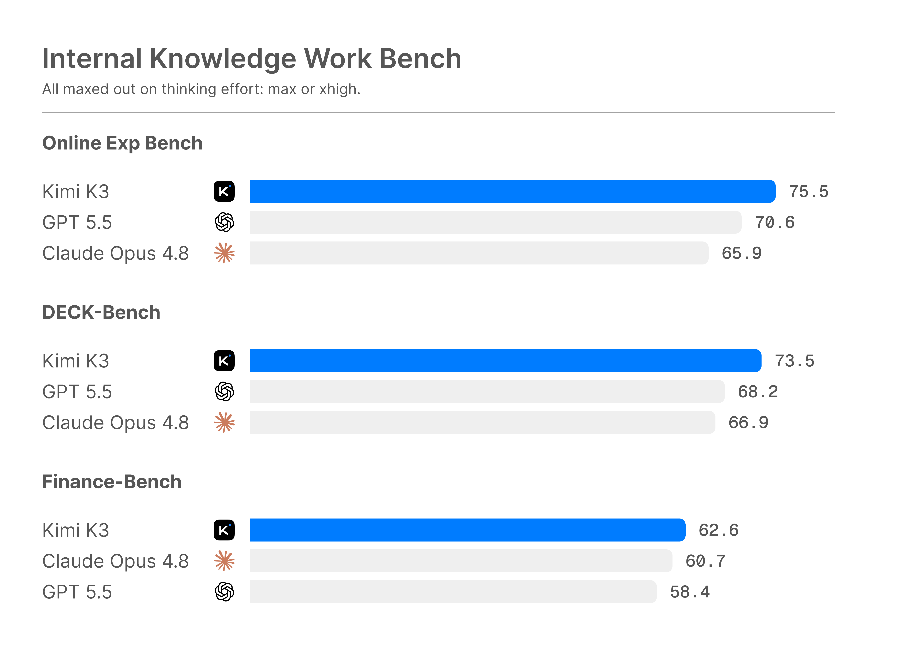
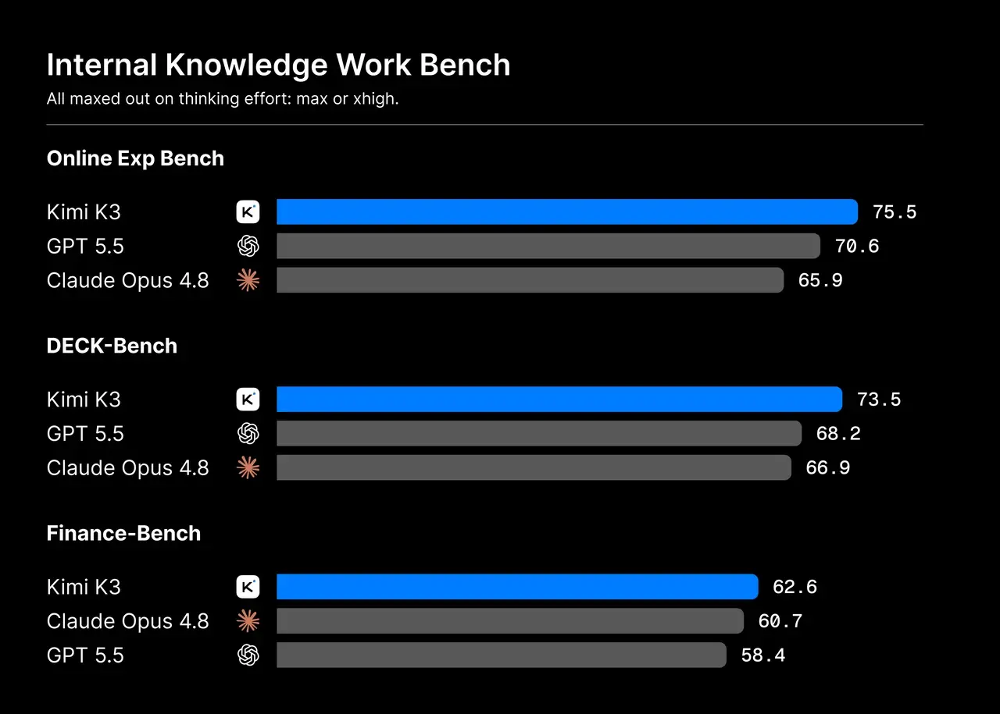
Research with Interactive Visualization
Below are a few examples of what Kimi K3 in Kimi Work can produce across financial consulting and scientific research:
Case 1: Interactive 42 years of AI ASIC industry research website
An interactive research report you can drill into: 42 years of the ASIC industry, created through 120+ rounds of recursive self-improvement. Kimi K3 transforms evidence into bespoke charts, animated diagrams, and interactive visual narratives. It pulled data via 2.8k+ web searches/fetches and 1.1k+ terminal data pulls, across 11k+ pages spanning 87 quarterly reports and 99 original PDFs.
Case 2: Fusion Industry Research
A consulting-style industry report with interactive visualizations—including timelines, Funnel Chart, Range Bar Chart, Gantt Charts, and publication-quality slides.
Case 3: GWTC-5 Gravitational-wave Analysis
An analysis of 391 gravitational-wave events using 20+ concurrent subagents, producing 7 scientific visualizations, 2 tables, and a literature synthesis from 10+ papers.
Kimi K3 is also particularly effective at producing infographic-style presentations, such as the fully editable heatmap and annual report shown below:
Widgets and Dashboard
In Kimi Work, we introduce two new features - Widgets and Dashboard - which make interactions with Kimi K3 more visual and persistent. Widgets let you generate interactive components directly within a chat, with connections to local data or external plugins for continuous updates. Dashboard brings the widgets you care about most into one persistent, personalized view organized around a topic, project, or goal.
Video Editing
Kimi K3 excels at motion design, animation, and video editing because its native multimodal architecture understands text, images, and video within the same model.
In one example, K3 created a 3Blue1Brown-style motion-graphics explainer of its own architecture, translating technical ideas into animated diagrams and transitions.
In another, Kimi K3 edited its own teaser video from 56 source clips, handling clip selection, motion-matched cuts, frame-accurate beat synchronization, audio processing, and multiple rounds of revision. A high-density short video like this would typically take an experienced editor one to two working days, or a beginner three to five.
Architecture and Infrastructure
Kimi K3 is built on Kimi Delta Attention (KDA) and Attention Residuals (AttnRes). KDA provides an efficient foundation for scaling attention, while AttnRes selectively retrieves representations across depth rather than accumulating them uniformly. Together, they form the architectural backbone of a model designed to scale well beyond the trillion-parameter regime.
Kimi K3 uses Stable LatentMoE, effectively activating 16 of 896 experts. At this level of sparsity, routing and optimization become first-order challenges. Quantile Balancing derives expert allocation directly from router-score quantiles, eliminating heuristic updates and a sensitive balancing hyperparameter, while Per-Head Muon extends Muon by optimizing attention heads independently for more adaptive learning at scale. Sigmoid Tanh Unit (SiTU) and Gated MLA improve activation control and attention selectivity respectively. Together, these advances enable stable and efficient training at the 2.8-trillion-parameter scale.
Kimi K3 applies quantization-aware training from the SFT stage onward, using MXFP4 weights with MXFP8 activations for broad hardware compatibility. To prevent expert imbalance from degrading throughput at large expert-parallel scales, we introduce a fully balanced expert-parallel training method with static shapes and no host synchronization on the critical path. Since inference efficiency likewise benefits from larger high-bandwidth communication domains, we recommend deploying Kimi K3 on supernode configurations with 64 or more accelerators. Finally, as KDA poses new challenges for conventional prefix caching, we have contributed a corresponding implementation to the vLLM community, to be released alongside the model. KDA with prefill cache allows us to serve Kimi K3 at a highly competitive token price despite its scale and long context.
More technical details will be available in our coming report.
Availability
- Kimi K3 Agents: Download or update to the latest Kimi app from your mobile app store, available on iOS, Android, and HarmonyOS, or visit kimi.com.
- Work with Kimi K3: Download the latest Kimi Work desktop app, version 3.1.0 or later, available for Windows and Apple silicon Macs.
- Code with Kimi K3: Run Kimi Code in your terminal and select Kimi K3 using the
/modelcommand. - Build with the Kimi API: Visit the Kimi API Platform and select
kimi-k3. Pricing is $0.30/MTok for cache-hit input, $3.00/MTok for cache-miss input, and $15.00/MTok for output. Powered by Mooncake's disaggregated inference architecture, the official Kimi API achieves a cache hit rate above 90% in coding workloads. - Bring Kimi to your organization: Kimi Enterprise provides enterprise-grade data privacy and member management, with complete separation between personal and organization accounts. Visit the pricing page and select “Get Kimi Enterprise” to subscribe for your team.
Full Benchmark Table
Footnotes
All Kimi K3 results reported below are obtained with the reasoning effort set to 'max', setting temperature = 1.0 and top-p = 1.0. Depending on the benchmark, each model is evaluated under one of three agentic harnesses — Kimi Code, Claude Code, or Codex — as specified in the notes below.
Coding benchmarks
- DeepSWE. Kimi K3 is evaluated with the Kimi Code harness. The GLM-5.2 score is taken from the GLM-5.2 release blog (https://z.ai/blog/glm-5.2); all remaining scores are from the official DeepSWE leaderboard (https://deepswe.datacurve.ai/), under which Kimi K3 attains 67.3 with the mini-SWE-agent harness. We report the DeepSWE v1.1 tasks.
- Terminal-Bench 2.1. Kimi K3 is evaluated with the Kimi Code harness. For all other models, we report the best score across harnesses: GLM-5.2 with Claude Code (https://z.ai/blog/glm-5.2); Claude Opus 4.8 and Claude Fable 5 with Terminus 2 (https://artificialanalysis.ai/evaluations/terminalbench-v2-1); GPT 5.5 and GPT 5.6 Sol with Codex (https://openai.com/index/previewing-gpt-5-6-sol/).
- Program Bench. Kimi K3 is evaluated with the Kimi Code harness. The GLM-5.2 score is from https://z.ai/blog/glm-5.2; all other scores are from https://www.vals.ai/benchmarks/programbench.
- SWE Marathon. Kimi K3, Claude Opus 4.8, and Claude Fable 5 are evaluated with the Claude Code harness; GPT-5.6 Sol is evaluated with the Codex harness. The GLM-5.2 score is from https://z.ai/blog/glm-5.2. Our evaluation is based on an H20-calibrated branch of the official v1.1 tasks (https://www.swe-marathon.org/): the Docker images, performance gates, and reference oracles for the GPU tasks have been recalibrated for H20, while the correctness and anti-cheat validators remain unchanged. Additionally, Claude Fable 5 hit fallbacks on 35% of the tasks in our evaluation, which may have negatively impacted its measured performance.
- FrontierSWE. Kimi K3 is evaluated with the Kimi Code harness and GPT-5.6 Sol with the Codex harness; all other results are from https://www.frontierswe.com/. Dominance scores are recomputed from the raw scores using the official evaluation script and are current as of July 16, 2026.
- PostTrain Bench. Scores for GLM-5.2, GPT-5.5, and Claude Opus 4.8 are adopted from the official PostTrainBench (https://posttrainbench.com/) results. Kimi K3, Claude Fable 5, and GPT-5.6 Sol are evaluated with the official Harbor implementation at maximum reasoning effort, averaged over three runs on H20 GPU (instead of H100 in the official setting) — Kimi K3 and Claude Fable 5 with the Claude Code harness, and GPT-5.6 Sol with the Codex harness.
- MLS Bench Lite. Kimi K3 is evaluated with the Kimi Code harness; GLM-5.2 and the Claude models with the Claude Code harness; GPT-5.5 and GPT-5.6 Sol with the Codex harness.
- KCB 2.0. Kimi K3 is evaluated with both the Kimi Code and Claude Code harnesses; GLM-5.2, Claude Opus 4.8, and Claude Fable 5 with the Claude Code harness; GPT-5.5 and GPT-5.6 Sol with the Codex harness. All models are evaluated at maximum reasoning effort, except GPT-5.5, which uses the "xhigh" setting. We also note that on this in-house benchmark, 10% of the tasks entered GPT-5.6 Sol's cyber guard.
Productivity and agentic benchmarks
- For OfficeQA Pro, each test case provides the agent with the entire PDF corpus, with all PDFs rendered as images and no machine-readable text available.
- OfficeQA Pro and SpreadsheetBench 2. Kimi K3, GLM-5.2, Claude Opus 4.8, and Claude Fable 5 are evaluated with the Claude Code harness; GPT 5.5 and GPT 5.6 Sol are evaluated with the Codex harness.
- MCP Atlas. All models are evaluated on the 500-task public subset with a 100-turn limit, using Gemini 3.1 Pro as the judge.
- AutomationBench. All models are evaluated on the 600-task public subset, following the official GitHub setup in all other respects.
- BrowseComp. We adopt the context-compaction strategy used in the Claude model cards, triggered at 300K tokens. When evaluated with a 1M-token context window and no context management, Kimi K3 achieves a score of 90.4. The results of Claude Fable 5, Claude Opus 4.8, GPT 5.6 Sol, and GPT 5.5 are cited from https://www.anthropic.com/news/claude-fable-5-mythos-5 and https://openai.com/index/gpt-5-6/.
- GDPval-AA, AA-Briefcase, and APEX-Agents scores are cited from https://artificialanalysis.ai/.
Multimodal benchmarks
- Except for ZeroBench, which follows the official setting and is run five times, all multimodal scores are averaged over three runs. MMMU-Pro is evaluated following the official protocol, preserving the original input order and prepending images to the text input.
- PerceptionBench. PerceptionBench (https://www.kimi.com/blog/perception-bench) is a benchmark that focuses on atomic visual perception capabilities.
Limitations
- Sensitivity to thinking history. K3 was trained in the preserved thinking history mode. If the agent harness fails to pass back all the historical thinking content as required, or if an ongoing session with another model is switched over to K3, generation quality may become highly unstable. We recommend using a harness with verified compatibility, such as Kimi Code, and avoiding switching to K3 in the middle of a session.
- Excessive proactiveness. K3's training places particular emphasis on long-horizon, challenging tasks. As a result, when it encounters minor issues or ambiguous user intent during task execution, it may make unexpected decisions on the user's behalf. If your application requires the agent to operate within well-defined boundaries and refrain from excessive improvisation, please impose more explicit behavioral constraints on K3 in the system prompt or in
AGENTS.md. - Despite being a highly competitive model overall, K3 nonetheless exhibits a noticeable gap in user experience compared with Claude Fable 5 and GPT 5.6 Sol.